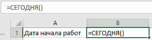
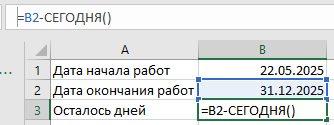

Работа с датами

Андрей, приветствую тебя на новом уроке! На нем мы научимся работать с датами в Excel. Даты играют важную роль в строительных проектах. Они используются для отслеживания сроков выполнения работ, расчета сроков между датами и автоматического обновления данных. Мы разберем основные функции для работы с датами, научимся считать разницу между датами, а также научимся использовать функцию "СЕГОДНЯ()", которая актуализирует дату каждый раз, когда ты открываешь файл. Мы создадим график строительства, который позволит отслеживать выполнение работ по срокам. Готов? Тогда давай начнем!
Формат даты в Excel
Excel позволяет вводить даты в различных форматах. Например, ты можешь ввести дату как «01.01.2025» или «2025-01-01». Excel автоматически распознает и преобразует их в стандартный формат. Главное, чтобы ячейка была отформатирована как дата. Чтобы изменить формат ячейки, выбери ее и нажми «Ctrl+1», затем выберите «Дата».
Как использовать функцию СЕГОДНЯ()

Пошагово:
1. В ячейке A1 введи: «Дата начала работ»
2. В ячейке B1 введи: «=СЕГОДНЯ()»

Функция «СЕГОДНЯ()» автоматически вставляет текущую дату в ячейку. При каждом открытии файла она будет обновляться.

Разница между датами
Чтобы узнать, сколько дней осталось до конца проекта или сколько дней прошло, можно вычесть одну дату из другой:
- В ячейке A2: «Дата окончания работ»
- В ячейке B2: «31.12.2025»
- В ячейке A3: «Осталось дней»
- В B3: «=B2-СЕГОДНЯ()»

Теперь в ячейке B3 будет отображаться количество дней до окончания работ. Это поможет тебе следить за сроками выполнения.

Работа с датами в расчетах
Ты можешь использовать даты в расчетах. Например, если срок работы составит 30 дней, то мы можем добавить это количество дней к дате начала.
Пошагово:
1. В ячейке A4: «Дата завершения работ»
2. В ячейке B4: «=B1+30»
Здесь мы добавили 30 дней к текущей дате, и Excel автоматически вычислит дату завершения.

Поздравляю с завершением урока! Теперь ты уверенно работаешь с датами в Excel и можешь отслеживать сроки, рассчитывать разницу между датами и добавлять дни к нужным датам. В следующем блоке мы перейдем к анализу данных. Мы будем учиться сортировать и фильтровать информацию, а также создавать диаграммы для наглядной визуализации данных. Этот блок будет полезен для того, чтобы упорядочивать и анализировать строительные данные, такие как стоимость материалов, объемы работ и т. д. Начнем с сортировки данных, чтобы в следующем уроке уметь быстро находить самые важные данные.
Но прежде чем перейти в следующий урок, давай закрепим полученные знания в коротком тесте, а также попробуем создать график строительства, отслеживающий сроки выполнения работ.
Встроенный материал: Flipcard — открыть сохранённое содержание
Функция `СЕГОДНЯ()` в Excel вставляет текущую дату и обновляется каждый раз при открытии файла
- Правда
- Ложь
Пояснение источника: Функция `СЕГОДНЯ()` в Excel вставляет текущую дату и обновляется каждый раз при открытии файла

Формат с числовыми значениями для дня, месяца и года является стандартным в Excel
- Правда
- Ложь
Пояснение источника: Формат с числовыми значениями для дня, месяца и года является стандартным в Excel

Чтобы вычислить количество дней между двумя датами в Excel, нужно вычесть одну дату из другой
- Правда
- Ложь
Пояснение источника: Чтобы вычислить количество дней между двумя датами в Excel, нужно вычесть одну дату из другой